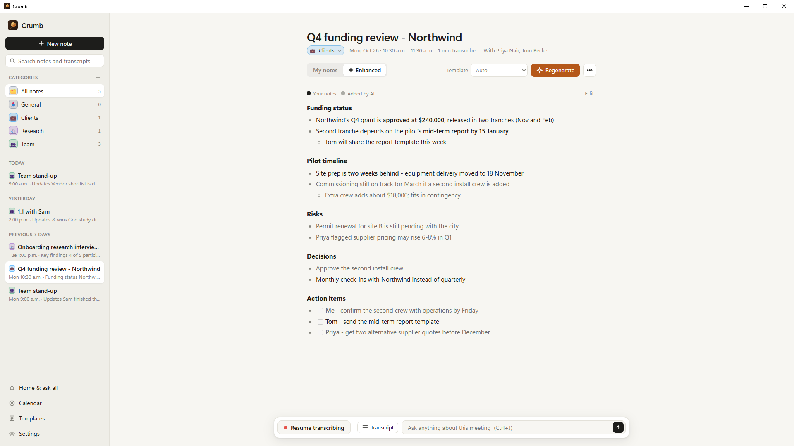
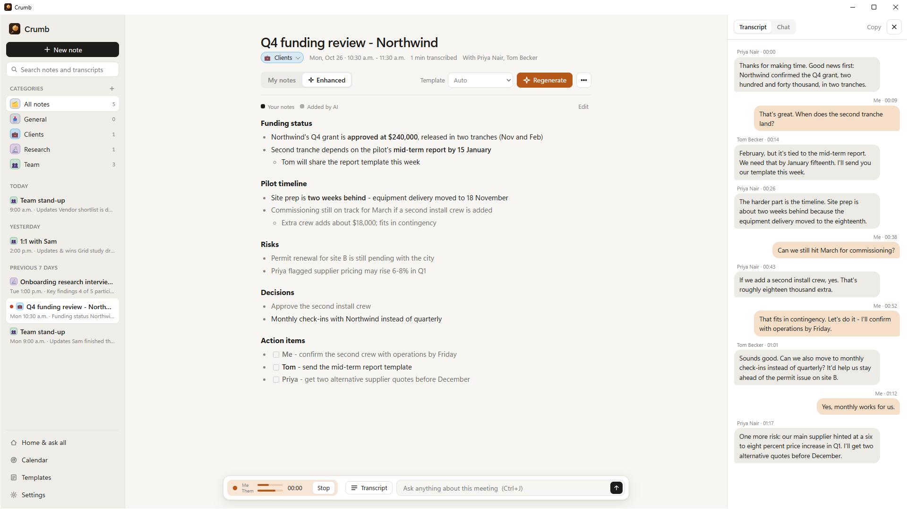
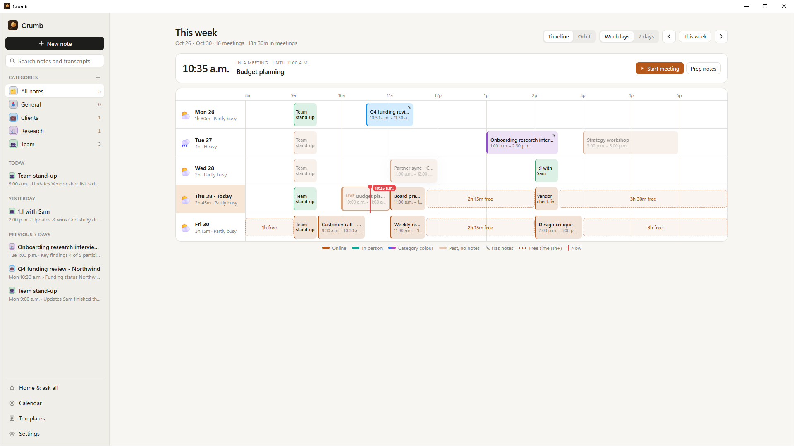

Meeting notes that write themselves
Jot a few rough notes while you talk. Crumb transcribes the conversation on your PC, with no bot in your call, and turns your notes into clear meeting notes when it ends.
Free download · Crumb Pro is a one-time purchase

Features
Everything you need from a meeting, nothing you don't
Crumb sits quietly in your tray and gets out of the way until you need it.
No bot in your meeting
Crumb listens through your PC's audio and microphone. Nothing joins your Teams, Zoom or Google Meet call.
Private by design
Transcription runs on your PC. Audio is never saved or uploaded, and your notes stay on your PC unless you choose otherwise.
Your notes, enhanced
Crumb keeps your words, fills in the details from the transcript with Claude, and shows what it added in grey.
Ask anything
"What did I commit to?" "Write the follow-up email." Ask about one meeting or all of them, even mid-call.
Knows when you're meeting
A "Take notes?" pop-up when a call starts, your Outlook calendar on hand, and one-click join for Teams meetings.
Names, not just "Them"
In Microsoft Teams calls, Crumb labels the transcript with who was speaking.
Live transcript
Every word, with no one else in the room
Crumb transcribes both sides of the call as it happens, right on your PC.
- "Me" and "Them" kept apart, with speaker names in Teams calls
- Works offline: the speech model ships with the app
- Templates for 1:1s, customer calls, interviews, stand-ups and more


Calendar
A week you can read at a glance
See your meetings as a timeline, with free time highlighted and a "meeting forecast" for each day, from clear skies to back-to-back.
- Upcoming meetings, and notes named for you
- Start a Teams meeting and your notes in one click
- Sort notes into your own categories, with smart suggestions
Crumb Pro
Your meetings, everywhere you work
Keep a copy of every meeting in your own cloud, and pick up where you left off on any PC.
Standard
- On-device transcription, no meeting bot
- AI notes and chat with Claude
- Outlook calendar and one-click join
- Teams speaker names
- Categories and templates
- Google Drive sync
- OneDrive sync
- Cross-device meeting history
Pro
- Everything in Standard
- Google Drive sync
- OneDrive sync
- Cross-device meeting history
Sync is off until you turn it on and agree. Crumb can only see the files it creates in your Drive or OneDrive.
Your account
How Crumb uses your Google or Microsoft account
Crumb has no servers of its own. Your account is used for exactly these things, and nothing else.
Signing in
You sign in with Google or Microsoft so Crumb knows it's you. Crumb receives your name, email address and account ID and keeps them on your PC. Nothing is sent to the developer of Crumb.
Google Drive drive.file
Asked for only if you have Crumb Pro, turn on sync and agree to it. Crumb creates a "Crumb" folder in your Drive and stores your meetings there. It can only see files it creates, never the rest of your Drive.
OneDrive Files.ReadWrite.AppFolder
The same for Microsoft accounts: Crumb only uses its own app folder (Apps › Crumb) in your OneDrive, and only after you turn on sync and agree.
You can turn off sync, delete the cloud copies, or remove Crumb's access at any time. Read the privacy policy.
Questions
Good to know
Does Crumb join my meeting?
No. Crumb works from your PC's own audio and microphone, so nothing joins the call and nobody sees a recording bot. Please let people know you're taking notes, and check whether you need their consent where you are.
Where are my meetings stored?
On your PC. Audio is never saved. With Crumb Pro you can also keep a copy in your own Google Drive or OneDrive, under your own account, and only after you agree.
Which AI does Crumb use?
Claude, by Anthropic. Sign in with your own Claude Pro, Max, Team or Enterprise plan through Anthropic's Claude Code app, or use an Anthropic API key. Transcription doesn't need either and works offline.
Why do I need to sign in?
Signing in with Google or Microsoft tells Crumb it's you, and it's how Crumb Pro reaches your own Google Drive or OneDrive. Crumb only gets your name, email and account ID.
What does Crumb Pro cost?
One payment, shown in your own currency in the Microsoft Store. There's no subscription, and Pro carries to your other PCs with the same Microsoft Store account.
What do I need to run it?
Windows 10 (version 2004 or later) or Windows 11, 64-bit, a microphone, and a Google or Microsoft account. 8 GB of memory is recommended.